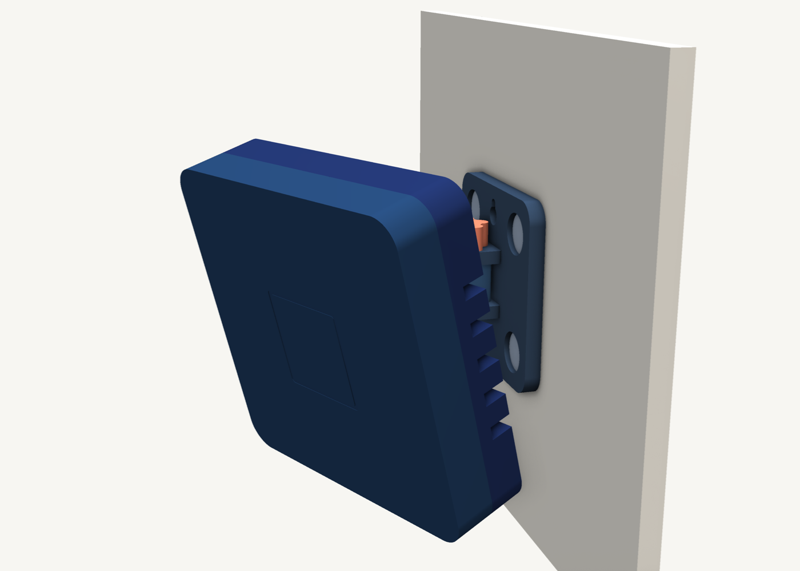
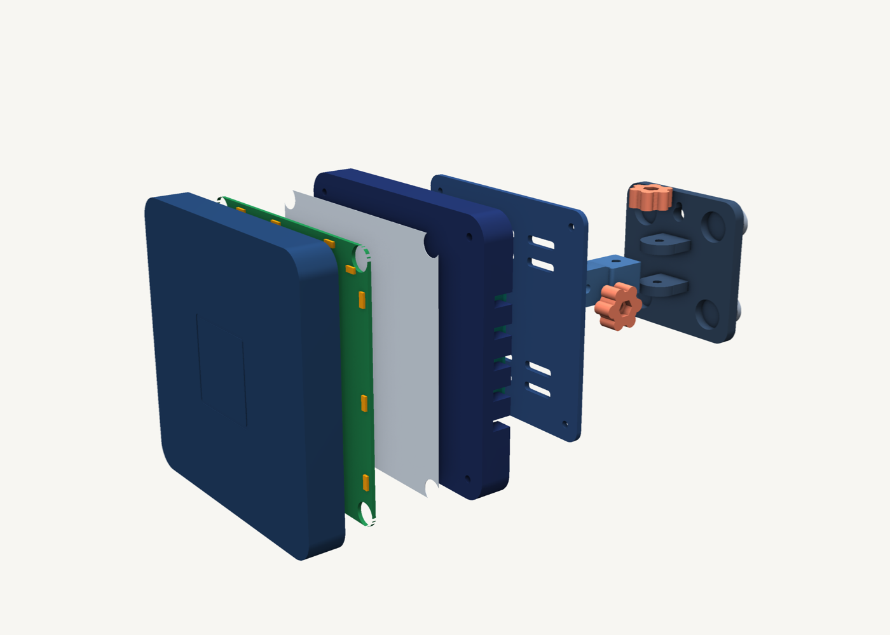
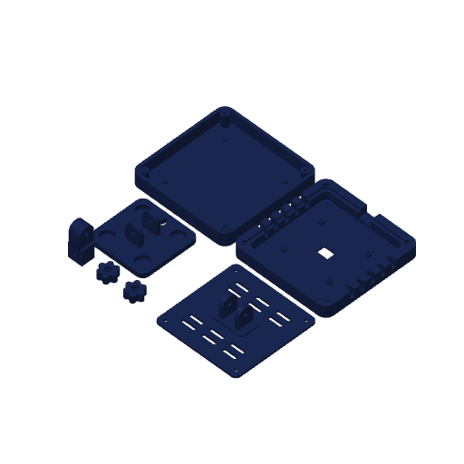

Bambu Lab X1 Carbon 단 1판 출력(4시간 52분, 165 g, 서포트 0%) · 2축 스위블 각도 조절(Pan ±30° / Tilt -25°) · AR-OPA 6대 실공간 검증
112×112 mm 4층 통합 RF PCB + Ni-Cu 후면 차폐판 + Radxa ROCK 3A/AX210 + 자석·나노겔 벽면 마운트 조립 및 실시간 좌우 Pan(±30°)·상하 Tilt(-25°) 시연입니다.
40석 대형 금속 칠판 교실과 금속 사물함 탈의실에서 대형 스탠드 없이 손 닿는 벽면 2.0 m / 1.1 m에 부착해 각도만 클릭 조절한 뒤 숨은 카메라 위치를 좁혀 가는 과정입니다.


